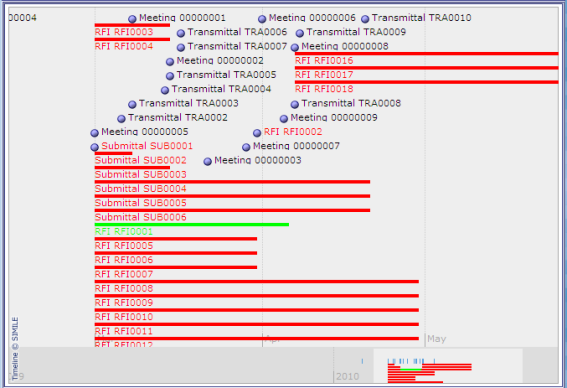

The Timeline shows a graphical view of the date and duration of events on the project. This allows you to access information about project items quickly, based on when they took place.

Open items are shown as red lines, from the open date to the due date.
Closed items are show as green lines, from the open date to the closed date.
Dated items such as meetings, and are shown as dots.
Using the Timeline
To display the timeline, click the Options menu item Timeline (on the Communication Management screen).
To show more details of an entry on the timeline, click the entry; the details are shown in a pop-up box. Click the link in the pop-up box to go to the item record.
To move the timeline view to show earlier or later events, click and drag (or click and use the arrow keys). You can move the timeline more quickly using the strip at the bottom.
Configuration
To configure the timeline, use the Timeline tab on Configuration.